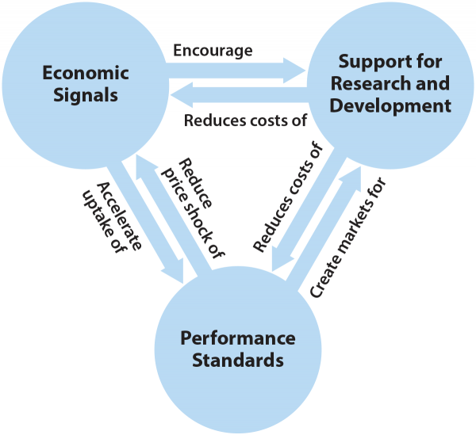

Energy Policy Design
Many policymakers understand the urgent need to reduce greenhouse gas emissions and mitigate the worst impacts of climate change, but need data to sort through the many types of policies available to them. Different policies are best suited for different circumstances, and some policies look good on paper but fail to perform in the real world. Despite this complexity, a practical consensus about what works is emerging, and it combines performance standards, economic signals, and research and development (R&D).
Policymakers have many options available to tackle emissions. Policies can generally be classified as one of four types, each of which reinforces the others:
- Performance Standards improve new equipment and help capture savings that economic signals cannot, because of market barriers
- Economic Signals can be highly efficient and encourage the uptake of more efficient equipment driven by performance standards
- R&D and Supporting Policies lower the costs of performance standards and economic signals by pushing new technologies to market and lowering the costs of existing technologies by removing deployment market barriers
There is no silver bullet policy for tackling emissions. Rather, a portfolio of policies that reinforce one another is the best approach. Quantitative modeling reveals that these policies, designed and implemented well, can put the world on track to a future where warming is limited to two degrees or less.

Essential Energy Policy
It is worth making the point again that there is no silver bullet policy for dealing with climate change. Many economists will argue that carbon pricing is a panacea and can drive all the change that is needed. This is false. Carbon pricing, a type of economic signal, is useful and effective in many settings, but it is ineffective in parts of the economy prone to market failures. In short, market failures often result in carbon pricing not delivering its expected impacts.
This leads to the next point worth stating bluntly: A portfolio of policies, including performance standards, economic signals, support for R&D, and supporting policies, is the most effective, lowest-cost way to drive down greenhouse gas emissions. Properly designed, they reinforce each other through system dynamics that emerge organically.
However, a portfolio is not simply a grab-bag of policies. There are hundreds of policy options that have little value. The right policies must be selected for each sector, and then they must be designed and implemented well.
Policy Design Principles
Selecting between the four policy types discussed earlier is just the first step to a strong policy portfolio; the specific policies selected must be designed well to function effectively. Each type of policy has certain characteristics that determine whether it is successful.
Experience with designing and evaluating energy policy over many years has elucidated a set of policy design principles that are essential components of performance standards, economic signals, and R&D policy, and that separate successful policies from failures (although supporting policies are an important element of any policy portfolio, their heterogeneity means they lack a set of design principles and are therefore excluded from this section).
The most important design principles for each type of policy are generally applicable based on policy type, although each principle will not apply to every policy. They are not overly complicated. In fact, most of these policy design principles are obvious, yet they continue to be overlooked in energy policy, often with disastrous consequences.
| Performance Standards | Economic Signals | Support for R&D |
| Create long-term certainty of the standards to provide businesses with a fair planning horizon
Build in continuous improvement
Focus standards on outcomes, not technologies
Prevent gaming via simplicity and avoiding loopholes.
|
Create a long-term goal and provide business certainty
Price in the full value of all negative externalities for each technology Or Use a price-finding mechanism
Eliminate unnecessary “soft costs”
Reward production, not investment, for clean energy technologies
Capture 100% of the market and go upstream or to a pinch point when possible
Ensure economic incentives are liquid |
Create long-term commitments for research success
Use peer review to help set research priorities
Use “stage-gating” to shut down under-performing projects
Concentrate R&D by type or subject to build critical mass
Make high-quality public-sector facilities and expertise available to private firms
Protect intellectual property without stymying innovation
Ensure that companies have access to high-level STEM talent
|
Conclusion
Policymakers have many options available when it comes to climate and energy policy, but these options generally fall into four categories:
- Performance standards set minimum performance requirements and can push more efficient and cleaner technology into the marketplace. They are particularly well suited for instances where there are significant market barriers or information is hard to come by.
- Economic signals, which either subsidize products and outcomes or tax inputs or emissions, can encourage adoption of more efficient technology and less polluting behavior. They are particularly effective for industries that are highly price sensitive and where there are significant substitutes available. Together, performance standards and economic signals reinforce one another to drive companies to innovate and produce better technology that makes its way into the marketplace and into the cars, factories, and power plants that make up the economy.
- Research and development support can lower the costs of performance standards and economic signals while making new technologies available.
- Supporting policies, which vary widely, are important as well and can increase information access and push new, more efficient technologies into use.
Performance standards, economic signals, and support for R&D are most effective when designed in accordance with a set of broadly applicable design principles. These straightforward principles can help separate good policy from bad while minimizing costs.
Policymakers must choose from the hundreds of policy options available to them to create a strong policy portfolio that leverages the relationships between each type of policy to drive down greenhouse gas emissions.